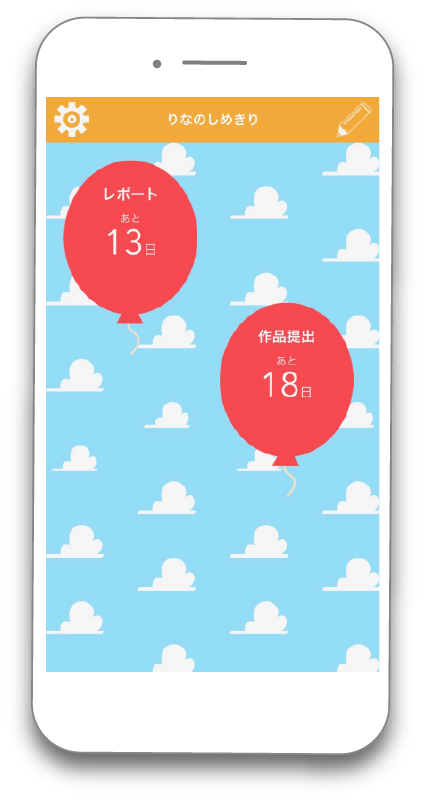
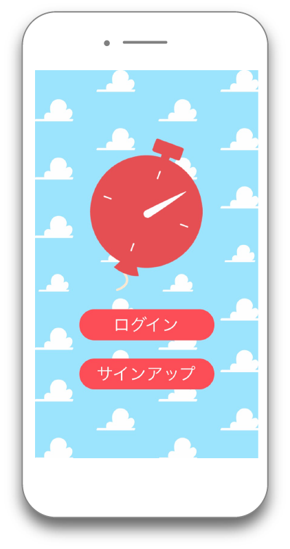

モーションキャプチャを用いたゲーム
セレナの冒険


制作背景
大学の実習でモーションキャプチャを用いてグループで制作したゲームです。グループ全員でモーションキャプチャの撮影を行い、その後私はUnity部分を担当しました。モーションを撮影する際に、マーカーが極力隠れない動作を選ぶなど、初めてで手こずったところもたくさんありましたが、現実の動きがゲームや仮想空間に反映されることの魅力を感じることができました。ゲームは、主人公のセレナが敵を倒すごとにその敵の属性の技を習得し、属性によって優劣がつけられていて、自分が倒される前に早く全敵を倒すことでクリアできます。アニメーションとパーティクルのタイミングを合わせることで、きちんとしたビジュアルになるように気をつけました。